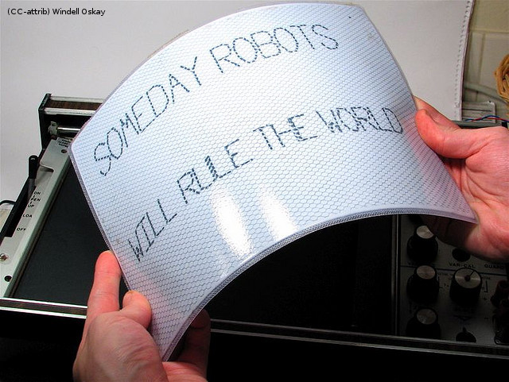
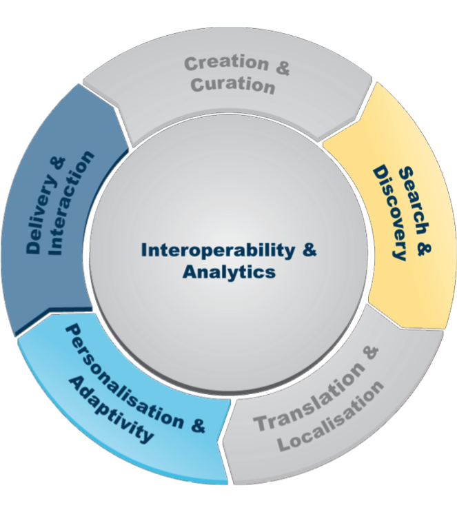

Your browser doesn't support the features required by impress.js, so you are presented with a simplified version of this presentation.
For the best experience please use the latest Chrome, Safari or Firefox browser.
Personalisation & Adaptivity
Background: What's this all about?
Personalisation:
Change the user experience to fit the person.

Adaptivity:Apply knowledge to change how an application behaves.
We want to evolve what, for whom and how we adapt and personalise

Core Theme People
Academics & PostDocs
- Owen Conlan
- Kenneth Dawson-Howe
- Declan O'Sullivan
- Vincent Wade
- Alexander O'Connor
- Cormac Hampson
Students
- James Coll—Micro Adaptation
- Mostafa Bayoumi—Semantic Slicing (with S&D)
- Fatima Al Hirbi—Community Analytics (with I&A)
- Rebekah Clarke—Intelligent Content Framework (IRCSET)
- Aonghus McGovern—Social Media User Modelling (TGI)
Challenge I: Content
Challenge Leader: Alexander O'Connor
Attribution
Challenge II: Social
Challenge Leader: Owen Conlan
Challenge III: Novel Adaptation
Challenge Leader: Owen Conlan
Work with Us!
Can you help us understand the content better?
Can you help us understand the user better?
Could your system benefit from being personalised and adaptive?